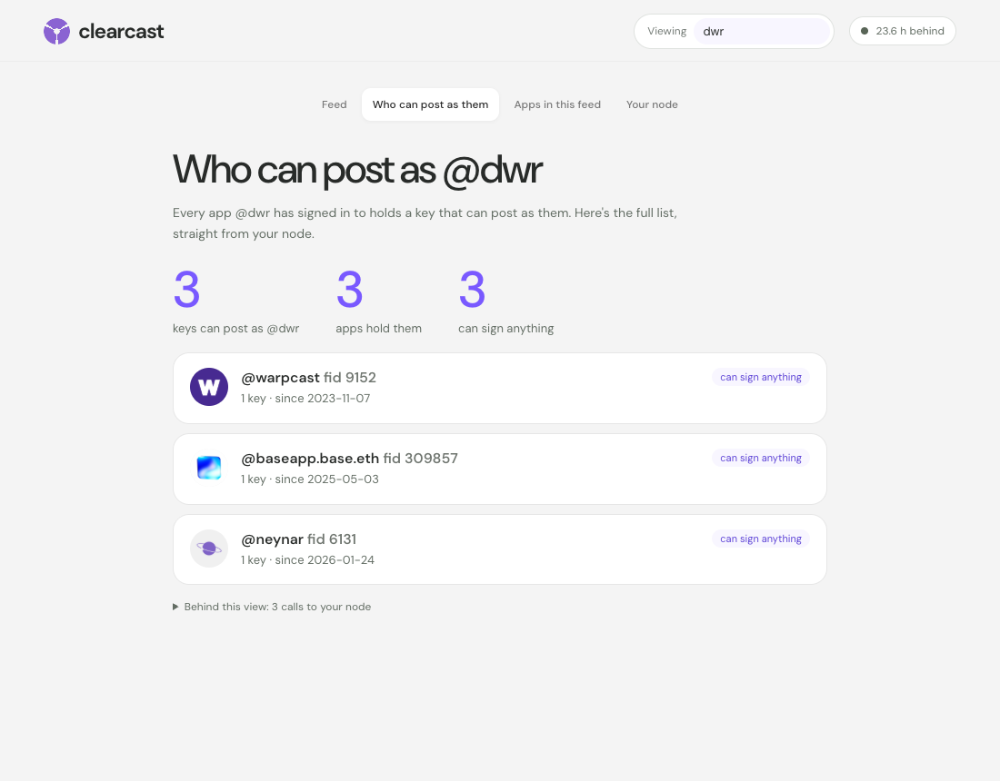
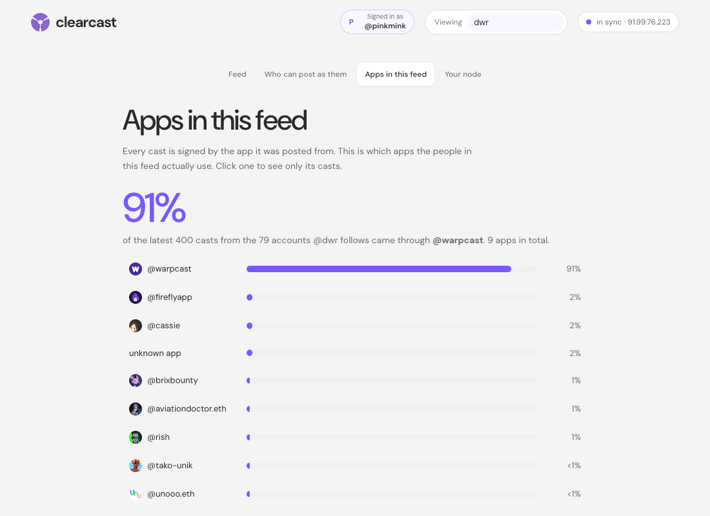

Who can post as you
Every app you've ever signed in to holds a key that can post as you. See them all, which can sign anything, and when the gasless ones expire.
Rent a server, sync a Snapchain read node on it, and install a client that reads from that node and posts through it. No API keys from anyone.
Your reads come from your node. Your casts go out through it.
$ curl -fsSL https://raw.githubusercontent.com/eucalyptus-viminalis/create-fc/main/provision/hetzner.sh | bash
cx43 is sold out in fsn1 right now; trying the next option
Server fc-node is up at 91.99.76.223 (cx43, 1000 GB volume, nbg1).
It bills by the hour until you delete it; see the end of this message.Server, volume and firewall in about half a minute. When a type is sold out, it tries the next location.
$ ssh root@<ip> 'curl -fsSL https://raw.githubusercontent.com/eucalyptus-viminalis/create-fc/main/node/setup.sh | bash'
fc-node setup: 15 GB RAM, 984 GB free in /root/snapchain
setup started as a background job.
$ ssh root@<ip> fc-node status
catching up: 18.9 h behind, gaining about 4 s per second (~4.7 h to go).Returns in 5 seconds. The snapshot loads in about 2 hours, then the node catches up on its own.
$ curl -fsSL https://raw.githubusercontent.com/eucalyptus-viminalis/create-fc/main/client/install.sh | bash -s -- http://<ip>:3381
installed clearcast into ~/.fc-client/app, using the node at http://91.99.76.223:3381
$ clearcast cast "posting through a fresh create-fc node, three commands later"
posted 0x39d6294b0a9e270aaa40bc404a0a08b3c5e3e6a8Installed in 6 seconds. The cast went out through the new node and was back on it 4.3 seconds later.
Your node syncs from the network's own peers and snapshots. Your client only talks to your node.
6 h 20 min on our last run: under 2 to load the snapshot, then about 4½ to catch up. It runs on its own.
Hetzner bills by the hour: about $0.16. Delete the server when you're done. Full costs
The client
Every app you've ever signed in to holds a key that can post as you. See them all, which can sign anything, and when the gasless ones expire.
Each cast shows the app it came from. Hide the Farcaster app in one click and see what everyone else is building.
A breakdown of every client in your feed. In ours, 89% of casts came through one app. Click any other to see only its casts.
Every view lists the exact calls it made to your node, ready to paste into a terminal. No API keys, no one else's servers.


No server needed yet: point the client at our demo node, which stays up until 24 October. Reading needs nothing else. To post, run clearcast login with a test account.
curl -fsSL https://raw.githubusercontent.com/eucalyptus-viminalis/create-fc/main/client/install.sh | bash -s -- http://91.99.76.223:3381clearcast uiNeeds Node.js 22.18+ and git. clearcast ui opens the client in your browser; it only listens on your own computer. When you run your own node, re-run the first command with its address.
Quickstart
hcloud CLI, logged in: brew install hcloud, then hcloud context create fc-node~/.ssh (ssh-keygen -t ed25519 if you don't have one)A cx43 (8 vCPU, 16 GB RAM) with a 1000 GB volume, about $0.16/hour. If cx43 is sold out it tries other locations, then cpx41 (~$0.20/hour), and says which it got. It prints the next two commands with your server's IP filled in.
curl -fsSL https://raw.githubusercontent.com/eucalyptus-viminalis/create-fc/main/provision/hetzner.sh | bashGive the server a minute to boot. Setup runs in the background, so you can close the terminal. Check on it with ssh root@<ip> fc-node status.
ssh root@<ip> 'curl -fsSL https://raw.githubusercontent.com/eucalyptus-viminalis/create-fc/main/node/setup.sh | bash'When fc-node status says "in sync", run this on your own computer. Then clearcast ui opens the client in your browser, or try clearcast feed dwr in the terminal.
curl -fsSL https://raw.githubusercontent.com/eucalyptus-viminalis/create-fc/main/client/install.sh | bash -s -- http://<ip>:3381Delete the server so it stops billing. It asks before deleting anything.
curl -fsSL https://raw.githubusercontent.com/eucalyptus-viminalis/create-fc/main/provision/hetzner-delete.sh | bashAlready have a Linux box with 16 GB of RAM and ~700 GB free? Skip step 0 and run step 1's curl … | bash on it as root. There is no npm package: npm create clearcast runs an unrelated package someone else published in 2022.
Tutorial
The quickstart works without reading any of this. Read it when you want to know what's running on your server, what you just signed, or what to do when something breaks. Every output and timing here is from a real run on 18–19 October 2026.
Command 0 uses Hetzner Cloud because it bills by the hour and has a clean CLI. Hetzner has no API for creating projects or tokens, so this part happens in the browser:
hcloud context create fc-node and paste the token. It's saved in plain text in ~/.config/hcloud/cli.toml. A project used only for this keeps the token's reach small.New accounts can only have 1024 GB of volumes in total, and Hetzner won't raise that until the account is older: the Limits page says "Your account is too new to request a limit increase." The official Snapchain installer needs about 2 TB, so we load the database differently (see command 1) and fit in 1000 GB.
| Item | Per month | Per hour |
|---|---|---|
| cx43 server, 8 shared vCPU, 16 GB RAM | $20.34 | $0.033 |
| 1000 GB volume | $84.37 | ~$0.12–0.14 |
| IPv4 address | $0.66 | $0.001 |
| Total | $105.37 | ~$0.16 |
| Total with cpx41, if cx43 is sold out | $126.82 | ~$0.19–0.21 |
Powering a server off doesn't stop the bill. Only deleting it does. This lists what it found, asks you to type fc-node, and deletes the server, volume, firewall and SSH key (34 seconds for us):
curl -fsSL https://raw.githubusercontent.com/eucalyptus-viminalis/create-fc/main/provision/hetzner-delete.sh | bashThe volume holds the database, so the next node re-syncs from scratch. Your app key in ~/.fc-client survives; point the client at the new node by running command 2 again with the new IP.
provision/hetzner.sh creates four things, each named so a re-run finds and reuses it: an SSH key, a firewall, a volume, and the server. The volume comes first, so it's attached when the server first boots and formats it at /srv/snapchain.
The firewall opens exactly what a read node needs:
| Port | Protocol | For |
|---|---|---|
| 3381 | TCP | HTTP API. Your client talks to this. |
| 3382 | UDP | Gossip with other nodes (libp2p over QUIC). A TCP-only rule leaves the node unable to peer. |
| 3383 | TCP | gRPC API, the same data as 3381 for other tools |
| 22 | TCP | SSH |
| 3000 | TCP | Closed. The node ships Grafana with the login admin / admin. |
Server types sell out. When Hetzner has no cx43 free in a location, it answers error during placement (resource_unavailable) and creates nothing. We watched cx43 disappear from all three EU locations within a minute, then come back in Nuremberg five minutes later. The script handles it: cx43 in fsn1, nbg1 and hel1, then cpx41 (the same 8 vCPU and 16 GB at about twice the server price) in the same order. It creates the server first and the volume after, in the server's location, because a volume can't move between locations. Pin your choice with TYPE=cx43 or LOCATION=hel1.
If the volume step fails with volumes size limit exceeded (resource_limit_exceeded), your account's volume cap is lower than VOLUME_GB. Check Limits in the console. Other sizes and locations can be set with environment variables: … | TYPE=ccx23 LOCATION=nbg1 bash.
Snapchain is the network that stores Farcaster's messages: every cast, like, follow and profile change. Its official installer, snapchain.sh, runs the node in Docker. node/setup.sh wraps it, starts it as a systemd job so you can disconnect, and changes one thing: how the database gets loaded.
A new node doesn't replay Farcaster from the beginning. It downloads a daily snapshot of each shard (about 397 GB compressed, in ~70 MB pieces) and then fetches the blocks made since. The node's own loader keeps every downloaded piece and an uncompressed copy of each shard until all three are unpacked. We estimate that peaks around 1.5 TB, which is why the docs ask for 2 TB.
fc-load-snapshot streams instead: download a piece, unzip it straight into the database, delete it, repeat. The node only downloads a snapshot when its database folder is empty, so afterwards it boots straight into catching up.
| Shard | Pieces | Time | Disk used after |
|---|---|---|---|
| 0 (the block shard) | 370 | 10 min | 37 GB |
| 1 | 2,671 | 63 min | 297 GB |
| 2 | 2,648 | 63 min | 556 GB |
Disk use peaked at 556 GB, the size of the finished database.
Our snapshot was 22 hours old by the time it finished loading. The node fetched the missing blocks at about 5 per second per shard and closed the gap by about 4 seconds every second, so it was in sync roughly 5½ hours later. On a second, timed run the snapshot was 19 hours old and the node caught up in 4 hours 25 minutes: 6 h 20 min from command 0 to in sync. The CPU sat 94% idle: the limit is fetching blocks from peers one after another, not the server.
$ clearcast status
node http://2.28.135.100:3381 · snapchain 0.14.3
shard 0 height 48242370 47661s behind
shard 1 height 48938063 26552s behind
shard 2 height 48754698 45879s behind
catching up: 13.2h behind. Reads work now, but recent casts may be missing.That's two hours into catching up. Five hours later every shard read 0–3 s behind. On the server, fc-node status reports the same numbers, and during setup it shows the snapshot's progress instead.
"Behind" is blockDelay from /v1/info: how many seconds each shard's newest block trails the clock. A synced node stays in single digits. In the same response, mempoolSize: 4294967295 is normal on a read node. It means "not reported", not an overflow.
Two things look alarming and aren't. Failed to dial peer … HandshakeTimedOut for a couple of the bootstrap addresses, and a steady trickle of InsufficientPeers ("read-node-peers"). Our node logged both all day and synced fine.
Why not the official one-liner? snapchain-bootstrap.sh reads its prompts from /dev/tty, which doesn't exist over ssh host 'curl … | bash' or in a systemd job. setup.sh answers both prompts in .env ahead of time and runs snapchain.sh upgrade directly.
install.sh clones this repo into ~/.fc-client/app, installs three dependencies (@farcaster/core, viem, @scure/bip39), saves your node's address in ~/.fc-client/config.json, and puts clearcast in ~/.local/bin. Node.js runs the TypeScript directly, with no build step.
Every read is a plain GET to your node, so you can repeat any of them with curl:
$ clearcast casts pinkmink -n 1
@pinkmink · 2m · via @pinkmink 0x085bf8a4
hello from my own snapchain read node 👋
$ curl "http://<ip>:3381/v1/castsByFid?fid=3355372&reverse=true&pageSize=1"Snapchain has no "home feed" endpoint. A feed is something a client builds. Ours is the simplest version: ask the node who you follow, fetch the latest casts from each, and merge them by time. That's one request per account you follow. For an account following 1,041 people, the feed took 13.5 seconds from Sydney to our node in Germany, while the same 1,041 requests made on the server itself took 1.7 seconds. Running the client close to the node pays off.
One oddity: a few old casts carry timestamps decades in the future (we found one dated 2061). They would sit at the top of any time-sorted feed forever, so clearcast feed skips anything more than 10 minutes ahead.
clearcast login asks for a seed phrase once, uses it to authorize an app key for this client, and then forgets it. Read Seed phrases before you run it. Here's a real run:
seed phrase (hidden): ************ words
m/44'/60'/0'/0/0 0x97547ffbA3F3e5a7553aA36948F618f39647F2Ea fid 3355372
storage: 1 unit(s)
app key: 0xaa2778f5b991db794630e34a0e192ce1633c135786ecbadf253406938ebdcf8e
KEY_ADD: 0x23c71047ebe9209753273ca2b33c931989ddad97, nonce 2, ttl 30 days
submitted to your node, which relays it to the validators. Waiting for it to land...
done. App key saved to /Users/sdf/.fc-client/appkey.json (mode 600). Your seed phrase was not saved.Then the usual verbs. Each one is signed with the app key, sent to your node, and read back from it until it shows up:
| Command | Confirmed after |
|---|---|
clearcast cast "hello from my own snapchain read node 👋" | 1.8 s |
clearcast like pinkmink/0x085bf8a4 · clearcast recast … | 4.0 s each |
clearcast unlike … · clearcast unrecast … | 4.0–4.1 s |
clearcast follow 13642 · clearcast unfollow 13642 | 6.3 s · 1.8 s |
@names in a cast become real mentions, --reply user/hash replies, --embed url attaches a link, and --dry-run checks the message with your node without sending it.
clearcast username alice claims a name and sets it. It's the one step that uses a service other than your node: the fname server at fnames.farcaster.xyz, run by Farcaster, free, no key. Your custody key signs the claim, the fname server countersigns, the proof reaches the network and then your node, and only then will the node accept a message setting your username.
Every cast is signed by an app key, and every app key records which app asked for it. So clearcast labels each cast with its app, and filters on it:
$ clearcast apps dwr
1 key @warpcast (fid 9152)
1 key @baseapp.base.eth (fid 309857)
1 key @neynar (fid 6131)
$ clearcast feed me --not-app warpcast
$ clearcast feed me --app fireflyapp --app 9152In one account's feed of 16,416 recent casts, 89% came through the Farcaster app (fid 9152, still called @warpcast). Excluding it is a quick way to see what everything else looks like.
Concepts
m/44'/60'/0'/0/0; clearcast login checks that one first, then the next nine. It can transfer the account and add or remove keys. It never needs to sign a cast.requestFid). One account can have many: Farcaster's app, Firefly, this client.KEY_ADD message does it: no transaction, no gas, about a second. Each key lists the message types it may sign (its scopes) and expires after 30–90 days unused.0x085bf8a4… you see in clearcast.clearcast reads every write back. If gossip drops it, send it again.clearcast login checks there's at least one unit..eth) work too.Seed phrases
A seed phrase is the master key to an account. Whoever has it can post as you, move your FID to themselves, and take any funds at the custody address. Like rm -rf, it's a normal tool that's unforgiving when used carelessly.
Not your main one. client/scripts/new-test-account.ts makes a fresh account for about $0.20 of ETH on Optimism, and shows its phrase once.
Only give a seed phrase to software from developers you trust, after reading what it does with it. For this client that's client/src/keys.ts: in memory, one signature, never written or sent.
The better pattern: the app shows a request, your wallet approves the key, and the phrase never leaves the wallet. Paste a phrase only when no such flow exists, as here.
We learned this one live: run through a coding assistant's shell, the account script's output, phrase included, landed in the chat transcript. Run phrase commands in your own terminal.
When it breaks
volumes size limit exceededYour account's total volume cap is below the requested size. New accounts get 1024 GB and can't ask for more yet. Keep VOLUME_GB at 1000 or less.
error during placement (resource_unavailable)That server type is sold out in that location. Command 0 moves on by itself, ending with cpx41. If you pinned TYPE or LOCATION, try another, or wait a few minutes.
clearcast prints its help instead of runningA pasted command can carry invisible characters. clearcast now says unknown command "username" (it contains hidden characters…). Retype the command.
clearcast login spends minutes on "checking indexes 1-9"The phrase's first address owns no account, and your node scans all 3.3 million registrations before answering "not found", 30–40 s each time. Check it's the right phrase.
Read nodes relay and forget. If the gossip was lost, the message is gone: run the command again. We haven't lost one yet.
fc-node status: "isn't answering and setup isn't running"Setup stopped partway. Run command 1 again: finished shards are skipped and a partial one is redone.
Help me test it
I'm entering this into Balaji's Farcaster client prize, and it only counts if other people run it. If you do, I'd love to hear how it went, good or bad.
Post how it wentThe first 5 people who run the three commands get $5 USDC to cover the server, whatever you think of it. Send your node's IP to @3070.eth.
Stuck, or just want company? Message @3070.eth for a 30-minute session and we'll run it on your machine together.
Nobody but me yet. Be the first, and your name goes here.
create-fc
MIT licensed. Not affiliated with Farcaster or Merkle Manufactory.